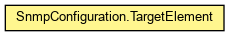

org.waarp.snmp
Class SnmpConfiguration.TargetElement
java.lang.Object
 org.waarp.snmp.SnmpConfiguration.TargetElement
org.waarp.snmp.SnmpConfiguration.TargetElement
- Enclosing class:
- SnmpConfiguration
public static class SnmpConfiguration.TargetElement
- extends Object

Target entry
- Author:
- Frederic Bregier
name
public org.snmp4j.smi.OctetString name
transportDomain
public org.snmp4j.smi.OID transportDomain
address
public org.snmp4j.smi.OctetString address
timeout
public int timeout
retries
public int retries
tagList
public org.snmp4j.smi.OctetString tagList
params
public org.snmp4j.smi.OctetString params
storageType
public int storageType
toString
public String toString()
- Overrides:
toString in class Object
Copyright © 2009-2012 Waarp. All Rights Reserved.